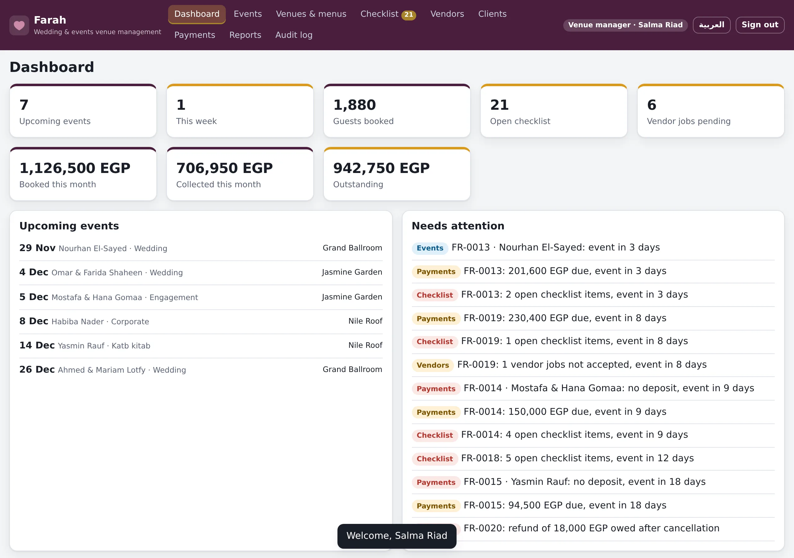
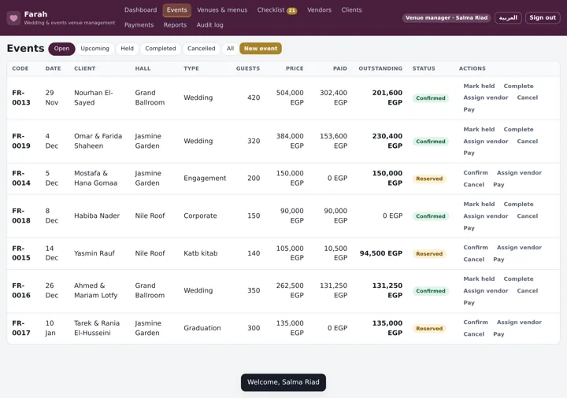
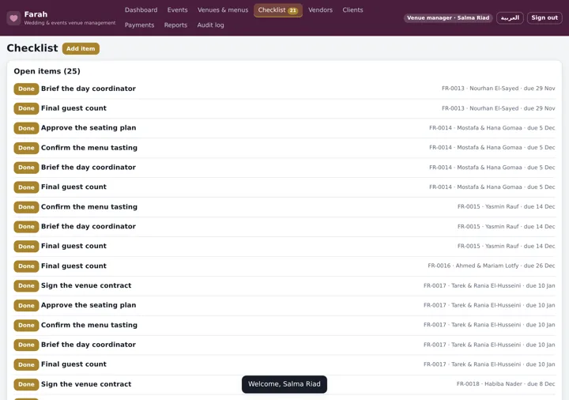
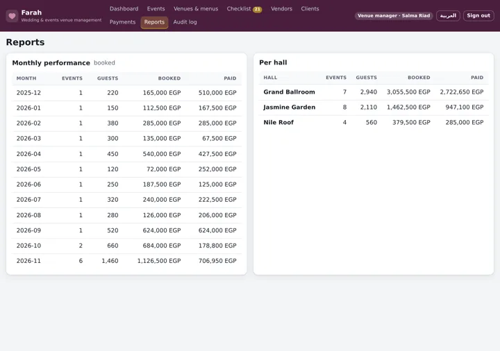
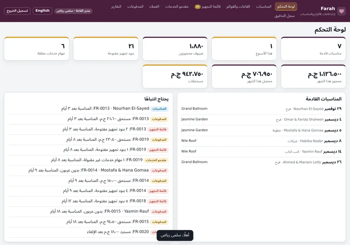
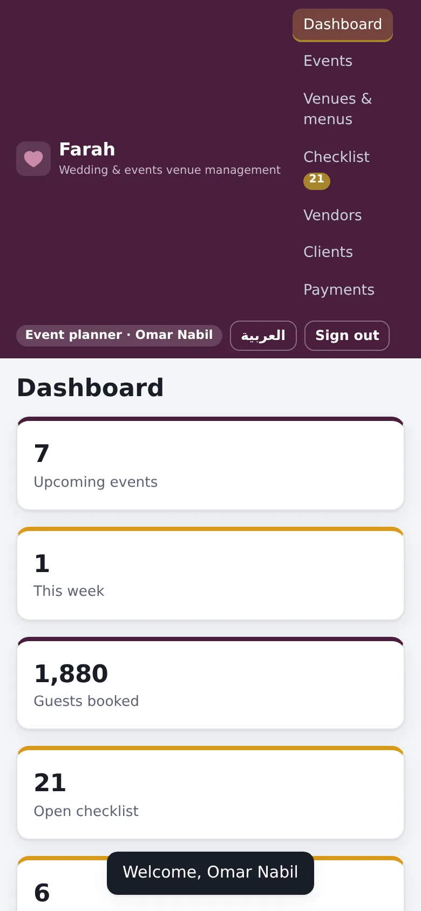

PORTFOLIO DEMO / BUILT / LIVE DEMO
Farah
Every event, guest and payment, on one record. Venue operations the way a Cairo wedding hall actually runs them.

ACTUAL BUILDFarah · Venue manager dashboard. Fictional venue, clients and events.
The problem
A wedding venue runs on a wall calendar, a notebook of client names and the owner's memory. Nobody can say whether the ballroom is free on the last Friday of the month without flipping pages, the tasting was never confirmed while the date approaches, the deposit a family paid is reconciled from bank screenshots when they ask, and the photographer hears about the timing change the night before.
What was built
An operations system for one venue with five roles. Three halls carry their kind and capacity; each catering menu carries a tier and a per-guest price. An event is booked for a client on a hall and menu for a future date, the guest count must fit the hall, a hall can never hold two active events on the same date, and the per-guest rate is snapshotted from the menu at booking. Five checklist items open with every event and toggle done as the team prepares. An event confirms only once at least thirty percent is paid; a payment can never exceed the balance or be dated in the future. Once the date passes a confirmed event is marked held, and a held event completes only when the balance is zero and every checklist item is done. Cancelling an event frees the hall's date and flags any refund owed on the dashboard. Vendor jobs for photography, sound, flowers, cake and lighting only move forward, and the vendor account accepts and finishes only its own jobs. The day coordinator never sees a price; the vendor sees nothing but their own job list, with every amount removed from the response on the server, not hidden on screen. The interface works in Arabic (right to left) and English, and on a phone.
What changes for the venue
Before. The ballroom's availability is a guess until two families show up for the same night. The unapproved seating plan is discovered on the morning of the wedding. The balance a family still owes is assembled from chat history, and a cancelled event's refund is remembered when they call angry.
After. The dashboard names the confirmed event days away with checklist items still open, the reserved booking with no deposit three weeks out, and the vendor job nobody accepted. A booked hall refuses the clashing event instead of apologizing later, and every cancelled event with money in hand shows the refund owed. The vendor reads their job list instead of waiting for a phone call.
Why it matters to a venue owner
A venue's reputation sits in the nights it hosts and its money sits in balances. When the hall calendar, the preparation checklist and the payment record come from the same event the team actually updates, nothing depends on one person's memory, and the refund owed is a number on a screen, not an argument. These are designed situations, not measured results from a real venue.
The approach
No framework and no build step: plain JavaScript pages, one serverless API function and one logic file that holds every rule (the double-booking and capacity guards, the thirty-percent confirm rule, the event stages, the payment limits, the checklist and vendor-job flows, per-role views, the deterministic sample venue). The same file runs in the API, the browser and the test suites. Permissions are enforced on the server on every operation, create operations carry idempotency keys so a retried request never books a hall or records a payment twice, and every action lands in an audit log the manager alone can read. What a role must not see is removed from the response on the server, not hidden on screen.
The result
A live demo anyone can open. Sign in as the venue manager (PIN 1111), an event planner (2222), finance (3333), a day coordinator (4444) or a vendor partner (5555); the PINs are on the sign-in screen. The sample venue has 10 clients, 3 halls, 4 catering menus, 20 events across a year of history and the coming weeks from reserved to completed, 100 checklist items, 13 vendor jobs and 44 payments across twelve months, and one cancelled event still owed a refund. Verification: 16 unit tests and 111 browser and API checks run to completion against the live site, covering forged tokens, malformed and oversized bodies, every role's permission lane, the complete event lifecycle from a hall reservation to a confirmed, paid, prepared and completed event, the double-booking and balance guards, idempotency keys, the coordinator and vendor never seeing money even on typed hash routes, XSS stored as text, Arabic RTL, phone-width layouts and zero page errors. The demo state resets itself roughly every six hours, so it always opens as the same working venue.
Inside the build
Open any preview to see the full capture. Captures show demonstration content, not evidence of client use.




